La música árabe
La música árabe tiene unas características propias que es necesario conocer para así entender la manera correcta de escucharla e interpretarla. En este capítulo, veremos las ideas fundamentales que la definen.
¿Qué es la música árabe?
Bajo el término «música árabe» se engloban las expresiones musicales que aparecen, con una serie de características comunes, en los países del mundo árabe. Estas características son el resultado de procesos tanto culturales como políticos, y de influencias a lo largo de su historia, entre las que cabe destacar:
Influencia de las culturas limítrofes durante los primeros siglos del Islam. Entre ellas, las de Bizancio, Siria, Mesopotamia y Persia, cada una con sus propias tradiciones musicales.
Influencia del mundo clásico. En especial de Grecia, que dio como resultado la escritura de tratados sobre la música y una cierta formalización del hecho musical árabe.
Influencia occidental durante el Medievo. Los desarrollos artísticos que tuvieron lugar en Al-Ándalus llegaron después al Magreb tras la expulsión de los moriscos, para continuar allí su evolución.
Influencia otomana. La hegemonía de los turcos otomanos entre los siglos xv y xx tuvo gran influencia en la música árabe, que asimiló elementos de la música turca, la cual a su vez había recibido antes la influencia de las de Asia Central, Anatolia o Irak, entre otras.
Influencia occidental moderna. En especial desde la conquista de Egipto por parte de Napoleón. La música árabe recibe elementos de la música occidental, que van desde formas musicales a la propia notación empleada hoy día.
La música en la cultura árabe
El papel de la música en la sociedad árabe es importante para comprender la manera en que dicha música se entiende y se interpreta, así como la forma en que se ha desarrollado y las características que la definen. Teniendo en cuenta el papel fundamental de la religión en el mundo árabe, es fácil ver que esta circunstancia es la más relevante a efectos del rol social y cultural que juegan las diversas clases de manifestaciones musicales.
Es una creencia extendida que el Islam rechaza la música. Sin embargo, esto no es cierto, o resulta cuando menos matizable. La música, en realidad, forma parte de la práctica islámica.
El Corán no hace alusión directa a la música, por lo que la consideración de esta y la permisividad hacia ella depende de la interpretación particular que se haga del texto sagrado. Esta puede variar desde una aceptación total, siempre que no proponga explícitamente el abandono de la fe, a una negación completa salvo para la recitación del Corán. Las órdenes místicas tales como el sufismo han sido las más permisivas con respecto a la música, y es en ellas que esta ha tenido gran importancia.
Para entender la postura del mundo árabe frente a la música, es necesario comprender qué se considera como tal música. Tradicionalmente, las manifestaciones musicales en el mundo islámico se han dividido en aquellas que son legítimas y toleradas, aquellas que pueden resultar controvertidas, y aquellas que son ilegítimas y se encuentran prohibidas. Entre las primeras se incluyen la llamada a la oración (adhan) y la recitación o salmodia del Corán (qiraat), así como cantos empleados en celebraciones. Estas son exclusivamente vocales, por lo que el uso de instrumentos queda fuera de ese grupo de formas musicales aceptadas. Las restantes, desde la música clásica a la música folclórica, incluyéndose aquí cualquier música que emplee instrumentos, son modalidades controvertidas, entendiéndose que la música tiene la capacidad de apartar al oyente de la rectitud moral dictada por la religión. Y aquellas en las que este hecho es más evidente y alejan al oyente de la fe islámica (músicas que puedan incitar al consumo del alcohol o a comportamientos que se consideran inmorales) se encuentran prohibidas.
El concepto de «música» en la sociedad islámica, y sobre el que existen condicionantes morales y sociales dentro de esta, incluye tan solo a esas manifestaciones musicales que no tienen presencia litúrgica. La salmodia o la llamada a la oración no se consideran parte del arte musical, sino una forma de expresión independiente, aun si desde el punto de vista occidental todas ellas pueden entenderse como manifestaciones musicales.
En el contexto anterior, ha existido tradicionalmente una división entre el estudio de la música (desarrollo de teorías o redacción de tratados) y la práctica de esta (composición e interpretación). Puesto que la segunda de estas realidades se consideraba ilegítima desde ciertas interpretaciones del Islam, pero no así la primera (el Islam valora la erudición con carácter general), el análisis y estudio del hecho musical ha sido practicado principalmente por musulmanes, mientras que entre los músicos y compositores árabes hay una mayor proporción de otras religiones (principalmente judíos y algunos cristianos) de la que cabría esperar.
La figura del músico tiene un perfil y una consideración distintos a los que son habituales desde la óptica cultural occidental. Salvo en aquellos músicos que han alcanzado fama y son respetados y apreciados por ello, se asocia al músico con una posición social inferior. Una vez más, el enfoque religioso de la sociedad árabe condiciona la manera en que se entiende la persona del músico.
Más llamativo aún es el hecho de que la profesionalización de la actividad musical esté mal vista, no solo socialmente, sino también desde la perspectiva de la propia música. Como veremos más adelante, la improvisación es un elemento fundamental de la música árabe, y la libertad que el músico aficionado tiene para elegir las variables que definen su música se considera algo de gran valor. Entendiendo que el músico profesional sacrifica estas y ha de plegarse a los deseos de su cliente, la opinión sobre este es desfavorable también desde el lado artístico y creativo.
Con independencia de su talento y maestría, el imaginario árabe tiene por lo general en más alta estima al músico amateur que al profesional. La única excepción a este hecho son los intérpretes que han alcanzado un renombre y una reputación global, pero para el resto de ellos, su profesión les priva de obtener cualquier forma de prestigio social dentro de la sociedad árabe.
El tarab
En la música árabe, se denomina tarab a una forma particular de emoción que invoca la música en quien la escucha, así como a un estado elevado de ánimo producido por esta. A falta de una palabra en nuestro idioma que sintetice el significado exacto de este término, se acostumbra a asociarlo a una suerte de éxtasis o arrebato provocado por el hecho musical, y en especial por la interpretación vocal, considerada como elemento primordial en la creación de tarab.
Aunque puede asociarse la idea de tarab a otras manifestaciones estéticas o artísticas, el concepto se aplica en especial para la música, o al menos para aquellas artes en las que existe una experiencia auditiva (tradicionalmente era habitual asociarlo, por ejemplo, a la lectura poética).
El músico árabe busca provocar tarab en el oyente, y el tarab como tal es parte de la música árabe, de su filosofía, y de su concepción estética.
El concepto de tarab está muy ligado al de modo melódico o maqam, del que hablaremos en el capítulo [maqam]. Aunque otros elementos de la música pueden despertar emociones en el oyente, es el reconocimiento del modo melódico, sus frases tradicionales y su desarrollo lo que se considera como fuente principal de esa clase de satisfacción musical que puede denominarse como tarab. Es decir, que un oyente puede, por ejemplo, estimularse con el ritmo de una pieza rápida o sentir tristeza ante unas frases lentas, pero ello no entraría dentro de esa idea. El tarab se asocia al desarrollo de toda una interpretación musical, y a un sentimiento fundamentado sobre todo en la tradición y la familiaridad del oyente con la narrativa que la música le transmite. El maqam es el vehículo de esa narrativa.
La estructura de las composiciones dentro de la música árabe, así como, en especial, la del conjunto de ellas que se interpretan en un concierto, está pensada para desarrollar el tarab de una manera progresiva, definiendo una curva de intensidad que maximiza el disfrute de la experiencia musical.
El tarab no es exclusivo del oyente, sino que también puede experimentarlo el músico, aun si su punto de vista es distinto. Ello hace que la relación entre el público y los intérpretes de música árabe sea importante, y que se establezca entre ambas partes un diálogo: el músico transmite sus emociones al público a través de la música, y este hace lo propio en el sentido opuesto mediante su reacción y su participación en el contexto de la representación musical.
A diferencia de lo que sucede en la música clásica occidental, el público de la música árabe puede y debe manifestar su ánimo cuando así lo considere oportuno, y ello no se considera una falta de educación. Si la música logra despertar el tarab en el oyente, este debe hacerlo saber, y es en función de esa reacción que los intérpretes adaptan la interpretación de la pieza, y que alcanzan ellos mismos su propio tarab. La improvisación, parte fundamental de la música árabe, viene en parte guiada por la respuesta del público y el estado de ánimo de la audiencia, lo que hace necesaria la participación explícita de esta.
En ese sentido, la música árabe se asemeja más a la música popular que a la música clásica occidental, aun cuando en su expresión más culta su forma se puede asimilar más a esta que a aquella.
La palabra tarab se emplea también para referirse al conjunto de la música árabe y su repertorio, en especial al de finales del siglo xix y el siglo xx. Es decir, para referirse a la música susceptible de invocar tarab en el oyente.
Historia
Pueden distinguirse dos periodos en la historia de la música árabe. El primero de ellos arranca en el periodo preislámico con la denominada huda, una forma puramente vocal y muy simple interpretada por los camelleros nómadas durante sus desplazamientos. A partir de esta, van apareciendo otras formas también simples y vocales tales como el nasb, un canto utilizado en las ceremonias matrimoniales, el hazaj, pensado para el baile, o el nadb, una elegía fúnebre. La música beduina se unirá posteriormente a las músicas de las culturas bizantina y persa, e irá adquiriendo buena parte de las características que aún hoy la definen.
El apogeo de este primer periodo de la música árabe se da en Bagdad durante la época de la dinastía abasida (750-1250), cuando la ciudad se convierte en el epicentro del talento musical árabe. De Bagdad saldría —a causa de la rivalidad con su maestro— Ziryab, de quien ya hemos hablado al tratar la historia del ud. Instalado en Córdoba, su trabajo convertirá a Al-Ándalus en el segundo enclave musical de referencia dentro del mundo árabe, y en ella se desarrollarán nuevas formas musicales y un estilo propio.
Con la toma de Bagdad por parte de los mongoles (1258) y la de Constantinopla por parte de los turcos (1453), se inició un declive de la música árabe y de sus centros neurálgicos. Desde entonces, y hasta casi el siglo xx, las formas musicales árabes sobrevivieron dentro del ámbito religioso, gracias especialmente al esfuerzo de las hermandades sufies (como ya dijimos, el sufismo no comparte la visión de otras corrientes dentro del Islam acerca de la impureza de la música), pero perdieron popularidad y no se desarrollaron más allá de ese ámbito.
A finales del siglo xx, tiene lugar la Nahda o Renacimiento árabe, que supone una reivindicación de la identidad árabe en países como Egipto o Siria, frente a la cultura otomana. Como parte de la Nahda, se recupera el patrimonio musical árabe, que vuelve a adquirir protagonismo, y comienza con ello un segundo periodo de su historia después de cuatro siglos de estancamiento.
En lo musical, la Nahda culmina en la época denominada «Edad Dorada de la Música Árabe», que es en realidad una época de esplendor de la música egipcia. Aunque la música árabe es muy variada y existen muchas formas regionales, lo que hoy día conocemos como «música árabe» es, fundamentalmente, la música que corresponde a este periodo.
A lo largo de aproximadamente cuarenta años centrados alrededor de la mitad del siglo xx, El Cairo se convirtió en la capital musical del mundo árabe, y durante este tiempo se produjo una evolución musical sin precedentes. Compositores como Sayed Darwish, Mohammad Al Qasabgi, Riad Al Sunbati o Mohammad Abdel Wahab fueron los principales impulsores de un cambio profundo en la música árabe, que recuperaba sus viejas raíces al tiempo que se desarrollaba de manera acorde con los nuevos tiempos y recibía influencias occidentales.
Siendo esta la época en la que el mercado discográfico comenzaba a instaurarse, y coincidiendo a su vez con un periodo también de esplendor del cine egipcio, las nuevas formas musicales se difundieron ampliamente por todo el mundo árabe. Gracias a cantantes como Umm Kalzum o Layla Murad, de inmensa popularidad, las composiciones y estilos de estos compositores se establecieron como parte fundamental del repertorio de la música árabe contemporánea.
Características
Los principales aspectos que definen la música árabe son los siguientes. Algunos de ellos son comunes a los de otras tradiciones musicales, mientras que otros son específicos.
Carácter eminentemente vocal. La voz es el instrumento principal de la música árabe, y el cantante o la cantante tiene una entidad muy superior a la del instrumentista. Hasta entrado el siglo ix, toda la música se denotaba como al-ghina («el canto»), y es solo entonces, a partir de la traducción de textos griegos, que comienza a utilizarse la palabra la palabra musiqi para referirse con carácter general a las manifestaciones musicales.
La preeminencia de la voz frente a los instrumentos puede verse en la propia música como tal, supeditada a las particularidades de esta. Incluso en las piezas instrumentales, y especialmente en las improvisadas, la forma canónica de tocar un instrumento busca imitar a la voz. El rango tonal más frecuente, el desarrollo melódico o el uso de silencios y pausas, entre otras propiedades, están encaminadas a conseguir con el instrumento una sonoridad similar a la de la voz, y a la manera en que esta emplea la respiración o los melismas que son característicos de la improvisación vocal.
Importancia de la melodía y ausencia de armonía. A diferencia de la música occidental, la armonía no existe en la música árabe. La melodía y el ritmo son los pilares de una pieza, y es sobre ellos que se hace énfasis. El desarrollo melódico, así como la riqueza expresiva que el intérprete añade mediante la ornamentación (ver capítulo [ornamentacion]), son los elementos que aportan interés y valor a la melodía, sin necesidad de un contexto armónico ni de las tensiones que este implica.
El acompañamiento se limita a la interpretación de la misma línea melódica con ciertas variaciones, o bien a la presencia de una nota pedal (frecuentemente la tónica del modo melódico empleado).
Cuando varios instrumentos interpretan la misma pieza, lo habitual es que toquen la misma línea melódica, con variaciones en la ornamentación o en la propia melodía. Se tiene así no una polifonía, sino una heterofonía.
Aunque algunas regiones tienen formas musicales polifónicas, se puede considerar que la música árabe es de carácter monofónico.
El sistema tonal árabe. El sistema tonal árabe comporta no solo una subdivisión de la octava en intervalos distintos a los empleados en la música occidental, sino también una manera propia de utilizar los distintos tonos y construir melodías.
La instrumentación. La música árabe se interpreta con unos instrumentos particulares y unas técnicas específicas. También la composición de los conjuntos musicales tiene formas propias, y todo ello caracteriza la manera en la que se interpreta el repertorio.
La ausencia de armonía, por ejemplo, se refleja en los instrumentos típicos árabes, que son de tipo melódico, y con los que no es posible (o resulta muy complejo) el tocar acordes.
Sistema tonal
Mientras que la música occidental se basa en las 12 notas de la escala cromática (12 subdivisiones de una octava), en la música árabe la octava se divide en 24 notas. Es decir, aparece una nueva nota entre cada dos notas de la escala cromática, y la separación entre dos notas consecutivas no es de un semitono, sino de un cuarto de tono.
A efectos de notación, se utilizan los conceptos de semibemol y semisostenido, alteraciones para las que se adoptan los símbolos y .
En la práctica, de los símbolos de alteración anteriores, es el semibemol el que se emplea para señalar las alteraciones de cuarto de tono, siendo esto suficiente en la gran mayoría de casos. Por la forma particular en la que se crean y se trasponen los modos melódicos como conjuntos de estas 24 notas, no todas ellas se utilizan, lo que permite la transcripción de la música árabe con el empleo de una sola alteración adicional.
No obstante, es importante recalcar que este enfoque no es más que una aproximación para poder escribir la música árabe, y el uso de la microtonalidad en esta es en realidad más complejo. Las notas situadas entre dos notas de la escala cromática no se encuentran en la mitad exacta del intervalo, y su posición ni siquiera es constante. Dependiendo de la época, estilo o región geográfica, existen variaciones, de manera que un semibemol puede situarse más cerca de la nota natural o de la nota bemol, según sea las circunstancias. Incluso si estas son iguales o se trata de un mismo intérprete, la nota puede desplazarse según se toque en un modo melódico u otro.
A efectos de este libro, obviaremos esta circunstancia y asumiremos la estabilidad de las notas que utilizan intervalos de cuarto de tono, así como de las restantes. Las notas se situarán en los esquemas del diapasón en el punto medio entre las posiciones de las notas adyacentes, aun cuando el lugar en el que se ha de pulsar la nota no ha de ser necesariamente ese.
Aunque se trata de una terminología en desuso hoy en día, existe una nomenclatura tradicional para las notas musicales. Se muestran a continuación algunos de sus nombres:
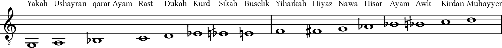
Para las notas fuera del rango mostrado, no existe un nombre tradicional. Siendo que lo anterior no cubre todo el rango del ud, se tiene que hay notas que pueden tocarse en este (y también en otros instrumentos), pero que no pueden nombrarse según este criterio. La explicación a esto la encontramos, una vez más, en el hecho de que la voz es el instrumento fundamental de la música árabe, y tan solo se han definido nombres para aquellas notas que representan el rango vocal típico de un cantante. A pesar de que las notas fuera de esa extensión son posibles con el ud (o incluso pueden serlo con la voz, según el intérprete), a efectos prácticos se considera que la melodía ha de estar en esa extensión de notas definidas y con nombres particulares.
Algunos de estos nombres volverán a aparecer cuando veamos los conceptos de yins y maqam, ya que tanto unos como otros toman sus nombres de los de las notas a partir de las que comienzan.
Es relevante también el hecho de que los nombres no se repiten al llegar a la octava, y la misma nota en octavas distintas se considera, según este enfoque tradicional, como una nota diferente.
En la actualidad, como se ha dicho, no se emplean estos nombres, y en su lugar se utiliza la misma nomenclatura que en idioma español (esto es, do, re, mi…). La notación por medio de letras (A, B, C…), habitual en países de habla inglesa, así como en otros contextos musicales, no se utiliza en la música árabe.
El sistema tonal árabe, en conjunto con la manera de utilizar sus elementos, conforman lo que se conoce como el maqam árabe. Por su importancia, lo trataremos de manera independiente en el capítulo [maqam].
Instrumentos
La música árabe emplea numerosos instrumentos, y en la actualidad a estos se suman la casi totalidad de los occidentales. Sin embargo, en su forma tradicional esta colección se puede reducir a seis de ellos: cuatro melódicos y dos de percusión. Estos instrumentos forman lo que se conoce como el tajt o conjunto clásico.
Instrumentos melódicos
Además del propio ud, el tajt incluye el ney o flauta árabe, el qanun y el violín.
Ney
El ney es una flauta hecha de caña, con seis agujeros en la parte superior y uno en la inferior, que se tapa con el dedo pulgar. A pesar de su simplicidad aparente, se trata de un instrumento difícil de tocar, ya que requiere una compleja técnica de embocadura.
Flautas de diferentes longitudes producen sonidos de distinta altura, y lo habitual es que el músico de ney disponga de una colección de ellas de diferentes tamaños, que utilizará según la tonalidad y el modo melódico de la pieza a tocar.
Qanun
El qanun es un instrumento de cuerda pulsada, de la familia del salterio. Tiene forma trapezoidal, y sus cuerdas se agrupan en grupos de tres de ellas con el mismo sonido, salvo las más graves, que pueden estar en grupos de dos o ser cuerdas simples. Se toca plano sobre las piernas o apoyado sobre una mesa, pulsando las cuerdas mediante púas que se enganchan a los dedos.
En su parte izquierda, tiene unas llaves fabricadas en latón que sirven para variar la altura de la nota dada por cada cuerda, y mediante las cuales se pueden obtener los intervalos de cuarto de tono.
Violín
El violín árabe no se diferencia del violín occidental. Originalmente se empleaban instrumentos tradicionales de cuerda frotada, tales como el violín egipcio de dos cuerdas, pero fueron reemplazados por el violín en la segunda mitad del siglo xix.
La afinación más extendida en la música árabe es sol-re-sol-re (de la cuerda más grave a la más aguda), distinta de la afinación sol-re-la-mi de uso generalizado en el violín europeo.
Aunque suele tocarse en la posición habitual, sujeto entre el hombro y la barbilla, la postura clásica árabe es distinta: el violín se sitúa en vertical, con su base apoyada sobre el muslo o la rodilla del interprete. En esta posición, para cambiar de cuerdas no se varía el ángulo del arco, sino que se rota el violín sobre su apoyo en la pierna.
Instrumentos de percusión
El instrumento de percusión principal en la música árabe tradicional es el riqq. A él se ha sumado, a partir de la segunda mitad del siglo xx, el tambor de copa o derbake.
Riqq
El riqq es un tambor de mano de unos veinte centímetros de diámetro, con marco de madera y diez pares de sonajas situadas de manera regular a lo largo de este.
Es el instrumento de percusión principal dentro de la música árabe, tanto la clásica como la folclórica, y puede producir una gran variedad de sonidos.
En la música cantada, es habitual que sea el propio cantante quien se acompaña a sí mismo con el riqq.
Con la incorporación del derbake, la técnica del riqq experimentó una evolución para adaptar su sonoridad y presencia. En particular, el sonido de las sonajas tiene en la actualidad más importancia que el del parche, algo que previamente no sucedía.
Derbake
El derbake (también conocido como darbuka, entre otros nombres) es un instrumento de la familia de los tambores de copa. Originalmente se fabricaba en barro y con un parche de piel, pero en la actualidad es más habitual el uso de parches de plástico y cuerpo de fibra o metal.
Se toca o bien sujetándolo bajo el brazo o bien sobre las piernas. Lo habitual es tocarlo con las manos, pero en algunos lugares y tradiciones se toca con los dedos de una mano y con un pequeño palo en la otra a modo de baqueta.
Ritmos
La música árabe es muy rica en sus estructuras rítmicas. Existe una amplia colección de patrones rítmicos, conocidos como iqaat (plural de iqa), que se utilizan para crear formas musicales más complejas, con estructuras basadas en uno o varios de estos patrones.
Los instrumentos básicos de la percusión árabe, según ya hemos visto, son el riqq y el derbake. Es en función de este último que se acostumbran a definir los patrones rítmicos fundamentales, empleando para ello los dos sonidos básicos que produce el instrumento: un sonido grave obtenido al golpear el centro del parche del tambor y un sonido agudo obtenido al golpear en el borde. Para el primero de ellos se usa la onomatopeya dum (y se denota con una letra D), mientras que para el segundo se emplea tak (y se denota con una letra T). A estos se le puede añadir un tercer sonido, ka (K), que representa el golpe sobre el borde con la mano opuesta a la empleada para el sonido tak, con menos intensidad.
Es habitual que en una pieza se den modulaciones de un ritmo a otro de similar estructura, sustituyendo por espacio de unos compases el uno por el otro, para así crear un efecto de contraste.
Se recogen a continuación algunos de los iqaat más importantes. Las que se presentan aquí son tan solo las formas fundamentales de los ritmos, que se enriquecen después en la interpretación de la misma manera que una melodía puede ornamentarse. Como ejemplo de esto, véase la estructura básica del ritmo conocido como maqsum, recogida en la primera línea, y versiones más complejas de este mismo ritmo en las líneas restantes.
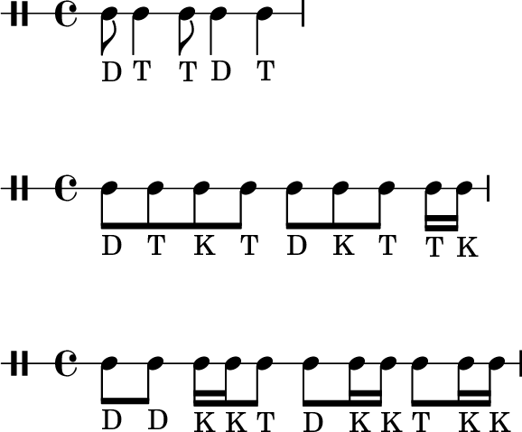
Ayub
Ritmo utilizado en la música sufí y en la música popular árabe. Se toca generalmente a un tempo elevado.
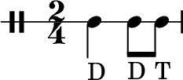
Malfuf
Uno de los ritmos más extendidos, especialmente en la música folclórica. Es habitual modular desde este ritmo al ayub, así como al maqsum.
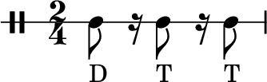
Fox
Ritmo de origen occidental (derivado del foxtrot, de donde toma su nombre), se utiliza en la forma musical longa. Se toca rápido y con poca ornamentación, dando sensación de vivacidad.
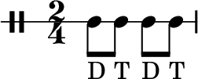
Samai Darij
Se emplea en la última sección de las que componen la forma musical samai, así como en los darij.
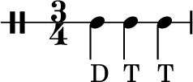
Masmudi Saghir
También conocido como baladi, palabra que quiere decir «del campo» o «del pueblo», ya que este ritmo proviene de las danzas folclóricas y músicas tradicionales. Existe un estilo de música denominado baladi, que aparece a principios del siglo x, y que puede llevar a confusión. No son conceptos equivalentes, ya que en este estilo aparecen otros ritmos además del masmudi saguir, y este a su vez se emplea en formas musicales distintas.
Su estructura es la siguiente:
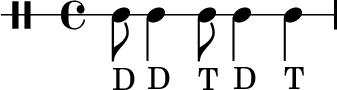
Maqsum
El más extendido y reconocible de los ritmos árabes. Modula habitualmente a malfuf, baladi y saidi.
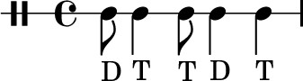
Saidi
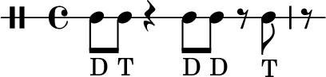
Wahda
El ritmo más habitual en la música vocal.
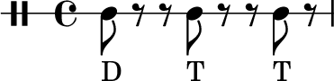
Masmudi Kabir
Ritmo de origen egipcio, se utiliza también en la música de danza. Tiene dos variantes principales: una con dos golpes Dum y otra con tres:
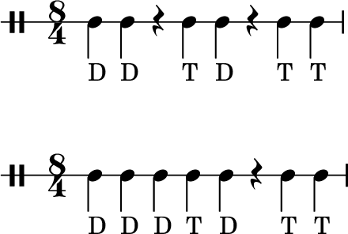
Chiftetelli
Ritmo de origen turco y uno de los más utilizados en la actualidad en la danza árabe.
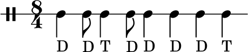
Sombati
Considerado por algunos como la versión egipcia del ritmo chiftetelli.
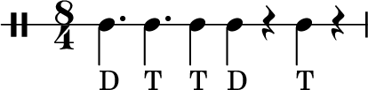
Samai Thaqil
Ritmo de diez tiempos divididos en una estructura 3 + 2 + 2 + 3. Se utiliza en la forma musical samai y en las denominadas moaxajas.
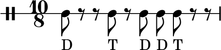
Zarafat
Ritmo popular empleado en las moaxajas.
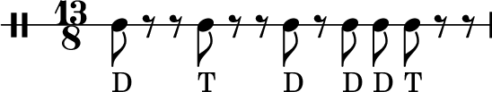
Formas musicales
Para el interprete de ud, es necesario conocer todas las formas musicales de la música árabe, tanto vocales como instrumentales, ya que el ud participa de todas ellas. En las instrumentales, por ser el elemento solista por excelencia. En las vocales, por ser también instrumento de acompañamiento, y porque estas acostumbran a incluir pasajes solistas donde el ud es protagonista.
Formas vocales
Las formas vocales de la música árabe son en general compuestas. Es decir, con partes principales vocales y partes instrumentales. Estas últimas aparecen tanto a modo de introducción como en el desarrollo de la pieza, con función de interludio. En ambos casos, la improvisación es elemento habitual, y esos fragmentos solistas suelen incluir una parte importante de ella.
Las principales formas vocales son las siguientes:
Moaxaja
La moaxaja es una forma poético-musical surgida en Al-Ándalus a partir de la forma literaria del mismo nombre. Se trata de un canto estructurado en estrofas y estribillos, con una métrica habitualmente compleja y una rima definida. Debido a su complejidad, se considera la moaxaja como una de las máximas expresiones de la música árabe.
A pesar de sus orígenes, la mayor parte de las moaxajas que se interpretan en la actualidad son recientes, del siglo xix y principios del xx, ya que es un género que ha mantenido una cierta popularidad entre los compositores. La región de Alepo, en Siria, ha tenido una especial relevancia a este respecto.
Es, junto con el dawr, la máxima expresión de la música árabe.
Qadd
El qadd (en plural, qudud) es una forma de canción ligera, que por su estructura sencilla se considera una versión simplificada de la moaxaja. Al igual que aquella, su origen se remonta a Al-Ándalus, pero su desarrollo se ha dado en la región de Alepo.
Se canta tanto en árabe coloquial como en árabe clásico, y es frecuente que se interprete al final de una wasla o conjunto de piezas.
Taqtuqa
La taqtuqa es una pieza sencilla, de poca duración, con un estribillo que se repite entre una serie de estrofas. Constituye lo que podríamos denominar una canción popular al uso, entendido esto en el sentido occidental. Como forma musical, gozó de gran popularidad a principio del siglo xx, en especial con cantantes femeninas.
Sus melodías son en general simples, como también lo son sus letras, escritas en un lenguaje coloquial y asequible.
No suele incluir modulaciones, y la melodía no varía entre las distintas estrofas, aunque algunas de ellas sí que presentan modulaciones y variaciones en la línea melódica.
Dawr
El dawr es una forma musical compleja, y se considera, junto con la moaxaja, el epítome de la música árabe. Se trata de la forma más elaborada dentro de las que constituyen el patrimonio musical árabe, y también la que más conocimiento y talento exige tanto del compositor como del intérprete.
Un dawr se compone de las siguientes secciones:
Un dulab (forma instrumental breve) que presenta el contexto melódico.
Una serie de estrofas y estribillos.
Una sección denominada ahat en la que el cantante principal y el coro cantan según un esquema de llamada-respuesta, utilizando la sílaba «ah».
Formas improvisadas
Además de las composiciones vocales, existen formas improvisadas, cuyo objetivo principal es permitir al vocalista desplegar sus habilidades, su dominio de la técnica, el conocimiento de los modos melódicos o su estilo de ornamentación.
En el layali la improvisación se realiza utilizando una única frase (<<Ya Layl Ya Ayn>>), elegida por su sonoridad más que por su significado. En el caso del mawwal, la letra sobre la que se improvisa es un poema escrito en una forma coloquial del árabe, mientras que en la qasida (que también puede ser un género no improvisado) se emplea un poema en árabe clásico.
Formas instrumentales
Siendo la música árabe eminentemente vocal, las formas musicales instrumentales no han adquirido plena entidad hasta épocas recientes. Es a partir de comienzos del siglo xx que la música instrumental alcanza suficiente categoría como para interpretarse por sí misma. Antes de ello, las piezas instrumentales aparecían tan solo como parte de piezas vocales, o bien se interpretaban intercaladas entre aquellas dentro de conciertos que se articulaban alrededor de la labor de un cantante.
Distinguimos aquí las formas de origen otomano (bashraf, samai y longa), que se han adaptado y han encontrado su lugar dentro del contexto árabe, y las que se originan directamente dentro de este.
Bashraf
Proviene del peshrev turco. Tiene una estructura dividida en cuatro o cinco partes denominadas janas, entre las cuales se intercala un taslim o estribillo.
La primera jana y el taslim emplean el mismo maqam, pero en las restantes janas se dan modulaciones.
La pieza se cierra siempre con el taslim, regresándose así al maqam original.
Suele emplear ritmos complejos, que no varían a lo largo de la pieza.
Samai
Al igual que el bashraf, el samai se compone de cuatro janas entre las que se toca un estribillo. La diferencia principal reside en el ritmo, ya que en el caso del samai se emplea el samai zaqil para las tres primeras janas y un ritmo en $\frac{3}{4}$ para la última (habitualmente samai darij).
Longa
La longa comparte con las anteriores formas la estructura de janas y taslim, aunque esta es en este caso menos estricta y permite variaciones. Es una música de danza que se toca generalmente a velocidad rápida, y que utiliza el ritmo fox en $\frac{2}{4}$.
Tahmila
La tahmila es una forma musical de origen egipcio. Se toca habitualmente por un tajt, y tras una introducción o encabezamiento, todos los miembros de la formación van sucesivamente teniendo turnos para interpretar un solo basado en la melodía principal. Tras cada solo, el grupo al completo toca un estribillo breve, de forma que la tahmila tiene un patrón de llamada-respuesta muy evidente.
Se trata una música enérgica empleada para la danza, y como norma general suele emplear el ritmo maqsum.
Dulab
Un dulab es una pieza instrumental breve que se utiliza para presentar el modo melódico o maqam de una pieza mayor. Contiene todas las características que permiten identificar el maqam, que luego se desarrolla a lo largo de la composición que sigue.
Darij
Un darij es una composición instrumental también breve, generalmente sin modulaciones, y que utiliza el ritmo samai darij.
En la actualidad se interpretan con poca frecuencia, y es raro que se compongan nuevas piezas que entren en esta categoría. Aun así las composiciones existentes, en su mayoría anteriores al siglo xx, son de interés como piezas de estudio de un determinado maqam.
Maqtuah
Se trata de una denominación genérica para las piezas instrumentales, sin un determinado ritmo o estructura. Una maqtuah suele estar formada por diversas secciones, entre las cuales puede haber partes improvisadas.
Muchas de las composiciones que entran dentro de esta categoría se utilizan para el baile, y se denominan raqsat (danza).
Taqsim
El taqsim es una pieza improvisada por un único músico, y constituye una de las máximas expresiones de la música árabe. El taqsim es una forma ritmicamente libre (aunque existen variantes con acompañamiento rítmico), y se ciñe tan solo al contexto definido por un maqam, desarrollándolo a lo largo de su duración.
Un taqsim puede formar parte de una pieza mayor (por ejemplo, una maqtuah), en cuyo caso actúa a la manera de interludio solista o introducción, o bien ser una pieza por sí mismo.
De los instrumentos de la música árabe, el violín y el ud son los que con más frecuencia interpretan esta clase de improvisaciones, y en el ud en concreto son parte imprescindible del repertorio.
Debido a su importancia, le dedicaremos una sección independiente (ver [taqsim2]) una vez que hayamos visto en detalle el concepto de maqam, necesario para comprender la estructura de un taqsim y la manera de tocarlo.
La wasla
A la hora de interpretarse, las piezas musicales de las clases anteriores suelen agruparse en una denominada wasla, equivalente al concepto de suite en la música clásica occidental. Una wasla contiene piezas tanto vocales como instrumentales, todas ellas alrededor de un modo melódico (maqam) común. Las piezas vocales complejas forman el nucleo de la interpretación, y las piezas instrumentales sirven para introducir el conjunto o actuar a modo de interludios. En su totalidad, la wasla presenta una narrativa que explora el maqam en cuestión, con diferentes intensidades en la interpretación y en las emociones que despierta en el oyente.
Una wasla típica puede, por ejemplo, seguir un esquema como el siguiente:
Una introducción instrumental, por ejemplo un samai o un bashraf.
Una serie de moaxajas.
Una improvisación instrumental, en la forma de un taqsimb.
Improvisaciones vocales (qasida o layali).
Un dawr.
Una serie de qudud u otras canciones ligeras, que acostumbran a dejarse para el final de la representación, en forma de epílogo más distendido.